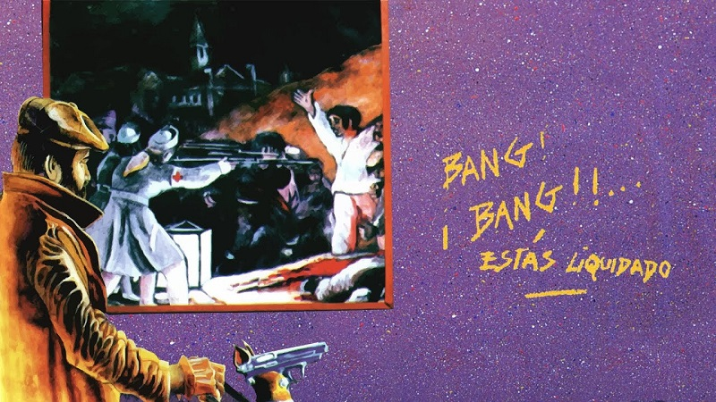

¡Bang! ¡Bang!... Estás liquidado es el cuarto álbum de estudio del grupo . La edición argentina de la revista Rolling Stone lo ubicó en el puesto 33.º entre los 100 mejores discos del rock nacional.
Después del éxito de Un baión para el ojo idiota, se presentaron varias propuestas de sellos para producir a la banda, pero el grupo decidió que tenían que seguir con su independencia, así que durante 1989 la banda se concentró en grabar en el estudio Del Cielito lo que sería el nuevo material, el disco no fue tan exitoso en el mercado, pero es considerado por los fanáticos de la banda como uno de los mejores.En este album se destacan canciones como "esa estrella era mi lujo" y "Ropa sucia"
Canciones:
- «Héroe del whisky» (3:42).
- «Rock para los dientes» (3:29).
- «La parabellum del buen psicópata» (5:56).
- «Un Pacman en el Savoy» (3:31).
- «Nadie es perfecto» (2:22).
- «Esa estrella era mi lujo» (2:54).
- «Maldición, va a ser un día hermoso» (2:27).
- «Ropa sucia» (4:24).
- «Nuestro amo juega al esclavo» (4:00).